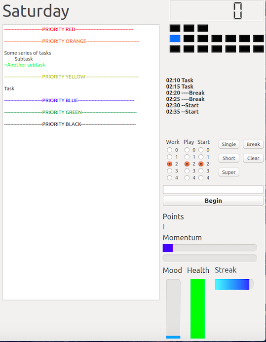

Bronson Schoen
Experiments, experience, etc.
Bronsonschoen@gmail.com
Play
Computer Vision Controlled RC Car
Drive an RC car using Unity and the Kinect SDK. An Arduino controls the RC controller for the car, while the Kinect SDK allows Unity to understand and recognize joint position and movement.
Applied Minds Side Projects
Computer vision / augmented reality gizmos I've built outside of work that rely on Applied Minds hardware and are thus not public. Primary independent technology used includes:
- Face/Eye Tracking using OpenCV
- Integrating OpenCV (Python) with Unity
- Interacting with 3D models by combining 3D mapping hardware and Unity
Advanced Game Input with Unity
Using an Ardunio Esplora with Unity to allow the use of accelerometers, light sensors, temperature sensors, linear potentiometers, and microphone control to manipulate Unity objects and enviroments.
IAM (Time Manager)
All in one app for organizing my time. Usually a testing ground for any new languages/frameworks I'm learning.
Behold, The Current Iteration
- Using PyQt to create UI features like workspaces, gamification, and auto-saving text editing.
- 
Round Two
- Experiment with integrating APIs (fitbit, chromecast, textmagic, etc) and SQL/SQLite databases. See code here.

The First Iteration
- First go around prototyping features in Visual C#.

CleverChat
Uses Cleverbot's API, Python, and Google Text to Speech to allow speaking with Cleverbot using the command line.
Evolving Critters
A simulation of little complex creatures called "Wins". They have physiques, personalities, and are very picky about who they mate with. Play with it on github here.

Roulette Winner
Calculates a winning strategy for a roulette bet given odds. Does better with more iterations and more unlikely odds. Written after playing roulette for the first time on a cruise and noticing similarities to previously studied recurrance relation problems. See code here.
Conference Papers
Coauthor: The Electron Losses and Fields Investigation at the 2015 American Geophysical Union Fall Meeting